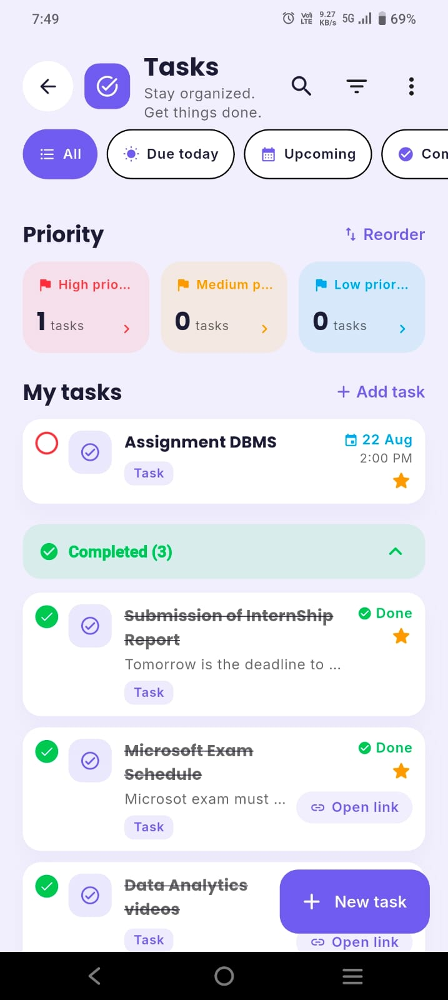

Quick answer
To use a student planner well, copy every deadline from your syllabi once, spend 10 minutes every Sunday planning the week, give each task a do date (when you'll work on it), not just a due date, and take 2 minutes a day to pick your top three tasks and tick off what's done. Keep it all in one place. If you miss a few days, don't backfill — just restart from today.
Almost every student buys or downloads a planner at the start of term. By week three, most of them are blank. That's not a willpower problem. It usually means the system was too complicated, or the planner was only being used as a list of due dates — which tells you what is due but never when you'll do it.
This guide is the simple version that holds up during a real semester: one setup, one weekly routine and one daily habit. It works with a paper diary, a notes app or a planner app.
Why most planners get abandoned
- It only holds due dates. "Essay due Friday" written on Friday is a reminder, not a plan. You see it when it's too late.
- The setup is too pretty. Colour codes, stickers and trackers feel productive on day one and become a chore by day ten.
- Information is scattered. Some deadlines are in the planner, some in WhatsApp groups, some in the college portal. If you can't trust the planner to be complete, you stop opening it.
- One bad week breaks the chain. You miss three days, the pages look like a failure, and it feels easier to quit than to catch up.
- Plans are too optimistic. People reliably underestimate how long work takes. In a classic study, students predicted they'd finish their thesis in about 34 days; it took them about 56 on average (Buehler, Griffin & Ross, 1994). A planner packed with impossible days quickly loses its credibility.
Every step below is designed to fix one of these.
What to write in your planner (and what to skip)
| Write it down | Skip or keep elsewhere |
|---|---|
| Your class timetable (or a link to it) | Lecture notes — keep them in a notes app or notebook |
| Every exam, quiz, assignment and project deadline | Long to-do lists of tiny chores with no date |
| Study sessions with a specific task ("Ch. 4 problems, 45 min") | Vague blocks like "study" or "revise everything" |
| Fixed commitments: work shifts, clubs, labs, travel, appointments | Decorative trackers you won't keep up |
| Your top three priorities for the week | A daily journal — fine if you enjoy it, but it's a separate habit |
A good rule: if it has a date or takes more than 30 minutes, it goes in the planner.
Step 1: The one-time semester capture (30–45 minutes)
Do this once, in the first week of term, with every syllabus or course outline open.
- Copy every dated item — exams, assignment deadlines, presentations, lab reports, project milestones, holidays and the last date to drop a course.
- Add your timetable as recurring classes, including rooms and online links.
- Mark heavy weeks. Scan the month view. Weeks with two or more big deadlines get a warning note one to two weeks earlier ("Start lab report — 3 deadlines in week 7").
- Choose one inbox. Decide that every new deadline — from a lecturer, a group chat or the portal — goes into the planner the same day.
This is the step that makes the planner trustworthy. Once everything is in one place, you stop carrying deadlines in your head. That matters more than it sounds: experiments by Masicampo and Baumeister (2011) found that making a specific plan for an unfinished task reduced the intrusive thoughts it caused — writing the plan was enough to free up attention.
Shortcut: in ClassTrack, you can photograph or paste your timetable and the AI assistant builds your weekly schedule, then add exams and assignments as countdowns and tasks. For a deeper term plan, see the semester planner guide.
Step 2: The 10-minute Sunday setup
This weekly session is where the planning actually happens. Pick a fixed time — Sunday evening works for most students — and keep it short.
- Look back (2 min). What didn't get done last week? Move it forward or drop it on purpose.
- Look ahead (2 min). Check the next 14 days for deadlines and exams so nothing surprises you next week.
- Block fixed time (2 min). Classes, work, travel and anything you can't move.
- Pick three priorities (1 min). The three things that would make this a good week — usually the closest big deadlines.
- Turn priorities into do dates (3 min). Break each priority into tasks and put each task on a specific day, ideally a specific time: "Tuesday 4–5 pm: essay outline in the library."
That last step is the one that changes results. Plans in the form "when X happens, I will do Y" are called implementation intentions, and a meta-analysis of 94 studies found they had a medium-to-large effect on actually reaching goals (Gollwitzer & Sheeran, 2006). "Finish essay this week" is a wish. "Tuesday after my 3 pm class, outline the essay in the library" is a plan.
Leave about a quarter of your free time unplanned. It absorbs the things that take longer than expected — which, thanks to the planning fallacy, is most things. If you want to see how many free hours you really have, the daily schedule planner works it out, and time blocking explains how to lay those hours out.
Step 3: The 2-minute daily check-in
Once a day — the night before or first thing in the morning — open the planner and:
- Pick today's top three tasks. If you only did these, would the day count? Then that's the right three.
- Check tomorrow's classes and deadlines so you pack the right things and don't miss a quiz.
- Tick off what's done and move what isn't. Moving a task is fine. Moving the same task three times is a sign it's too big — split it.
Attach the check-in to something you already do every day, like breakfast or setting your alarm. A habit stuck to an existing routine is much easier to keep than one that needs its own reminder.
7 habits that make a student planner stick
- One planner only. Two systems means neither is complete. Pick paper or an app and commit for the term.
- Write tasks as actions. "Read pages 40–62 and make 10 flashcards" beats "Biology". You should know how to start without thinking.
- Size tasks to 25–60 minutes. Small enough to start, long enough to make progress. Pair them with a Pomodoro timer.
- Plan for the energy you'll have. Hard thinking when you're sharpest; admin and easy tasks after a long lab day.
- Never backfill. If you miss a few days, don't recreate them. Open today, do the 2-minute check-in, carry on.
- Keep it ugly if needed. A messy planner you open every day beats a beautiful one you avoid.
- Review exam weeks early. Two to three weeks before exams, switch from weekly tasks to a subject-by-subject exam study plan.
Example: one week in a student planner
Here's how a second-year student with a lab report, a quiz and a part-time job might fill in one week after the Sunday setup.
| Day | Fixed | Planned tasks (do dates) |
|---|---|---|
| Mon | Classes 9–2 | Lab report: write method section (45 min) · review stats lecture (25 min) |
| Tue | Classes 10–3 · Work 6–9 pm | Quiz prep: 15 flashcards on the bus (20 min) |
| Wed | Classes 9–1 | Lab report: results and graphs (60 min) · quiz practice set (30 min) |
| Thu | Quiz 11 am · Work 5–9 pm | Light day — reply to group project chat, plan Friday |
| Fri | Classes 9–12 | Lab report: discussion and references (60 min) · submit by 5 pm |
| Sat | — | Buffer: catch up on anything that slipped · free afternoon |
| Sun | — | 10-minute setup for next week |
Notice what's missing: no "study all day" blocks, nothing on work nights except a 20-minute task, and a deliberate buffer on Saturday. That's what keeps the plan believable.
Your weekly planning checklist
Sunday setup checklist
Tick these off during your weekly planning session.
Paper or app?
The method above works with either. Paper is great if writing helps you remember and your timetable rarely changes. A planner app is easier if your classes rotate, you want reminders and exam countdowns, or you plan on the go. If you can't decide, read digital vs paper planner: which is better for students? — it includes a 1-minute quiz. If you're choosing an app, the best student planner app guide lists the features worth paying attention to.

Key takeaways
- A planner fails when it only stores due dates. Plan when you'll do each task.
- Capture every deadline once at the start of term, and keep one inbox for new ones.
- 10 minutes every Sunday and 2 minutes a day is enough for most students.
- Specific "when–where" plans are backed by research and beat vague goals.
- Leave a buffer, keep tasks small, and never backfill missed days — restart from today.
Put your planner on your phone
ClassTrack keeps your timetable, tasks, deadlines, exam countdowns, focus timer and attendance in one free app — and builds your timetable from a photo.
Get ClassTrack freeFrequently asked questions
How do you use a student planner effectively?
What should I write in my student planner?
Why do I always stop using my planner?
How much time should planning take?
Is a digital or paper student planner better?
Sources
- Gollwitzer, P. M., & Sheeran, P. (2006). Implementation intentions and goal achievement: a meta-analysis of effects and processes. Advances in Experimental Social Psychology, 38, 69–119.
- Masicampo, E. J., & Baumeister, R. F. (2011). Consider it done! Plan making can eliminate the cognitive effects of unfulfilled goals. Journal of Personality and Social Psychology, 101(4), 667–683.
- Buehler, R., Griffin, D., & Ross, M. (1994). Exploring the "planning fallacy": why people underestimate their task completion times. Journal of Personality and Social Psychology, 67(3), 366–381.